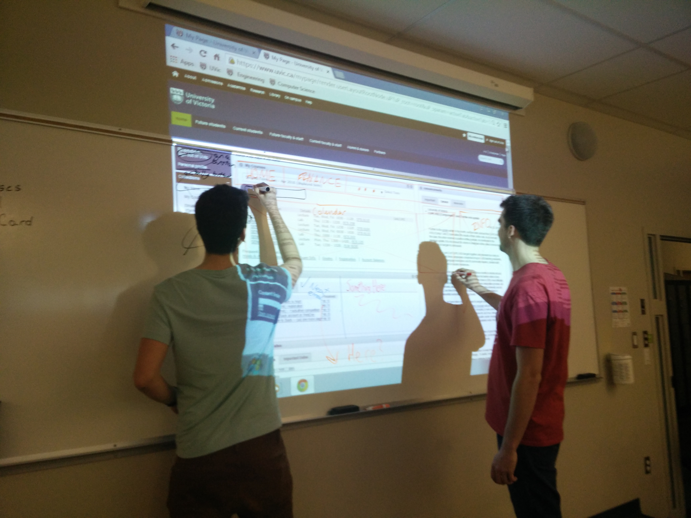
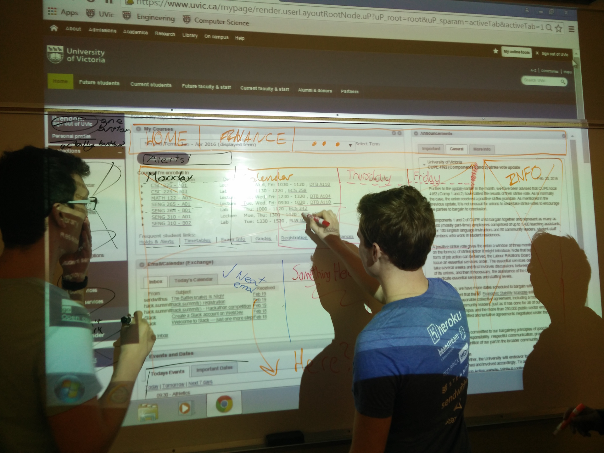
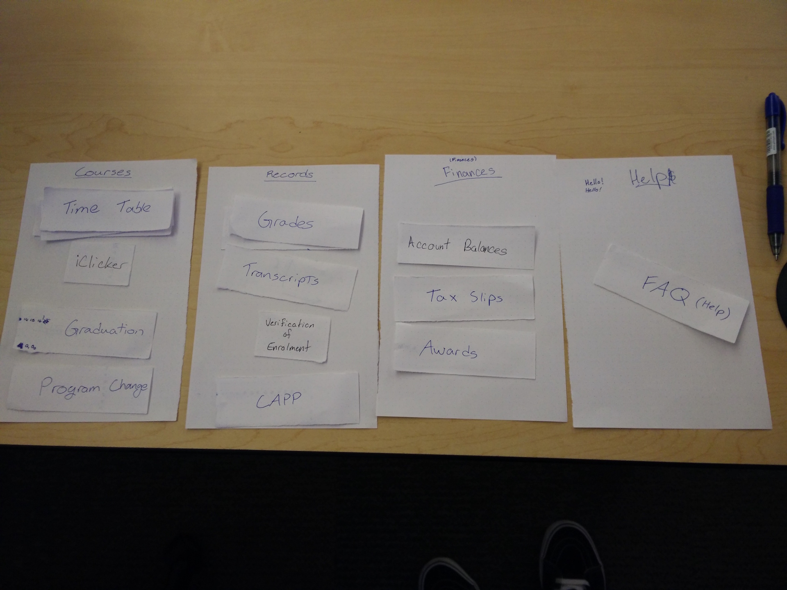
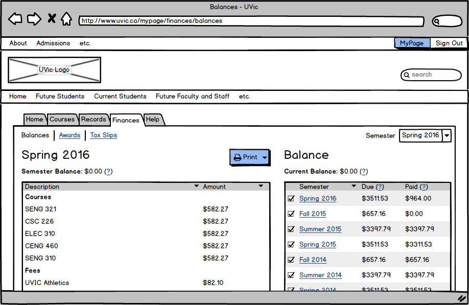
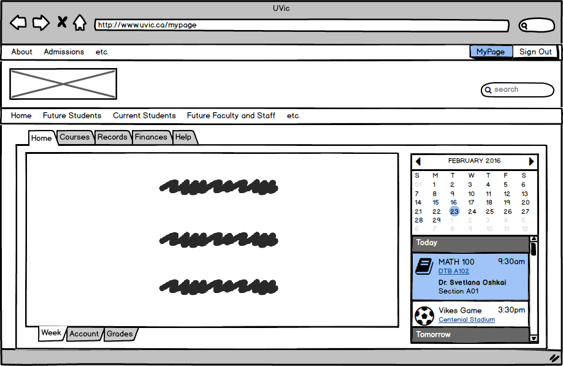
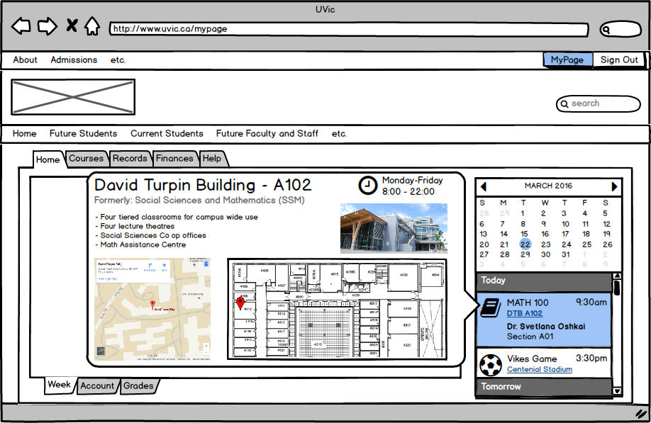

Our Challenge
The UVic MyPage is the home page given to all students attending UVic. MyPage is a site where one can access personal information pertaining to UVic such as timetables, tuition, and tax forms.
Unfortunately, the UVic MyPage is also a cluttered mess. There is too much extraneous information, and there is no organizational flow. It can often be frustrating locating small pieces of information on the site. With that in mind, we saw the potential to make a simplified and structured UVic student home page. We wanted the home page to be a place where one could find information easily and efficiently.
User Research
To help guide our design process our team observed users in a controlled environment to collect qualitative data on how UVic students interact with the current UVic web services, in particular, MyPage and Student Services. After some brief background questions we asked the students to perform a number of common tasks using the UVic web services.
Our user research yielded some interesting trends,
- Calling In
-
If unable to find the information they needed in their web services, many users fell back to calling the department in question.
- Timetable
Most users can find their timetable but wish it was easier to interact with.
- Proof of Enrollment
-
Many users think that their administrative transcript it the closest thing to a proof of enrolment available from the web services.
- OneCard
-
Almost all users resort to the search functionality to find their OneCard information.
User Research
To help guide our design process our team observed users in a controlled environment to collect qualitative data on how UVic students interact with the current UVic web services, in particular, MyPage and Student Services. After some brief background questions we asked the students to perform a number of common tasks using the UVic web services.
Our Personas and Scenarios
We developed two personas to help guide our design. The two personas we chose were a junior student, Daniel, who had just started at UVic and a senior student, Amy, who was in her third year.
Daniel Lévesque
Junior Student
Daniel is a smart, caring, but cautious man from Houston, Texas. He caries forth his southern hospitality to everyone he meets, making him an easy man to get along with. In high school he was involved with the students' council, took info tech courses, and spent most of his time doing woodwork.

Amy Bailey
Senior Student
Amy is an artistic 23 year old girl from Fredricton, New Brunswick. After graduating from high school she spent a year travelling. She fell in love with the many stories of people she met. Inspired by this, Amy set out to capture her perspective and tell stories through film.
From these personas we developed two user stories (scenarios) to be representative of common tasks that a UVic student might need to perform. We describe them below in the context of the current UVic web services to help highlight current issues.
Daniel finds his first class
It's Tuesday, Daniel has just started his first semester of classes at UVic. He needs to get to his first class, MATH 100. He finds the course on his timetable but doesn't know what DTB is. He finds out it's the David Turpin Building from the website but then someone says to "just go to SSM" and he gets confused. Not sure where his class is Daniel ends up in the David Strong Building and sits through a full hour and twenty minutes of ECON 103c.
Amy applies for Scholarships
Amy, like many other university students is starting to run out of money by her 3rd year of university. She decides to apply for a few scholarships. After spending a few hours on one of the applications, the form says to attach a copy of her "Official Transcript" and "Summary of Tuition Fees". Amy spends the rest of her night attempting to find these documents on the UVIC myPage website. Unfortunately, due to the confusing layout of the website she is unsuccessful, and unable to submit the application.
Ideation and Whiteboarding
To brainstorm, our team projected the existing UVic mypage onto a whiteboard to throw around ideas of how to reorganize the existing content.
As ideas were thrown around, everyone helped by drawing out various interface they could imagine. Together, we decided on how to style the interface which helped us build our low fidelity mockups.
Singling out each feature, we decided how to categorize and lay them out.
Low Fidelity Iterations
Thanks to previous brainstorming, creating low fidelity prototypes was relatively streamlined as the only work to do was lay out the design in Balsamiq.
As we implemented elements in Balsamiq and the pages came together, naturally we tweaked elements and their location. 
When we ran into usability issues or found a better solution, we revisited the drawing board to brainstorm. Here we found that users didn't like how tapping the building brought them to a different app.
We decided that it would be more appropriate to have a pop-over appear with relevant information, keeping the user on the same page and providing more information at a glace. So, upon discovering a better way, we implemented it and re-tested, thereby iterating towards the 'best' solution.
Building the Prototype
We decided that to provide the most realistic prototype while still allowing flexibility, it would be best build a static website.
To do this, we used Handlebars and Grunt to generate static HTML pages from templates we built and JSON to populate data fields.
Put webpage in here
Validating our Design
To validate our design, we did another cycle of user testing with both previous and new participants. By following the same set of questions, we could see how both new participants found the interface, and previous participants did compared to their first round. Doing so, we gathered qualitative data which subjectively verified our hypothesis, that our interface better provided online UVic services that we found ourselves and others needing.